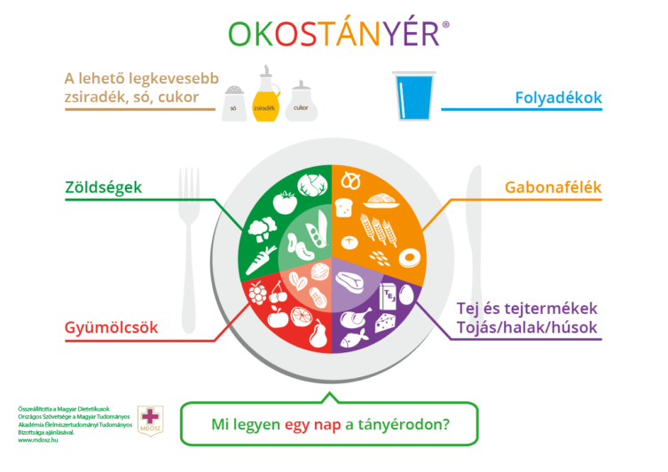

Mit és hogyan együnk? Az egészséges táplálkozás nem ördöngösség, és számos út vezet a megfelelő megoldáshoz. Magas szintű tudományos bizonyítékok szólnak a változatosság előnyei mellett, vagyis arról hogy az egészséges táplálkozás megvalósításához nincs szükség egyes élelmiszercsoportok kizárására az étrendből. Ehelyett a különböző élelmiszerek rugalmas kombinációjával válik kézzelfoghatóvá a hétköznapok szintjén az egyéni igények, preferenciák, kulturális hagyományok figyelembevételével az egészséges táplálkozás. Az OKOSTÁNYÉR® végigvezet bennünket az alapvető élelmiszercsoportokhoz (zöldségfélék, gyümölcsök, gabonafélék, tej és tejtermékek, hús és húskészítmények, halak és tojás) kapcsolható táplálkozási tanácsokon. Emellett a megfelelő folyadékbevitelre, továbbá a zsír-, cukor- és sóbevitel mérséklésére vonatkozó útmutatás is megfogalmazódik. Így ad iránymutatást egy napi étrend ajánlott összetételéről. Az egészséges életmódnak a rendszeres fizikai aktivitás elválaszthatatlan része, ezért bár szoros értelemben nem tartozik a táplálkozás tárgykörébe, de a javasolt mozgásmennyiség is helyet kapott a legfrissebb ajánlásban.
Napi energiabevitelünket alapvetően a szükségletnek kell meghatároznia. Nagyobb fizikai, szellemi igénybevétel esetén több táplálékot kell fogyasztanunk, hogy az erőnlétünket, testsúlyunkat az adott szinten tudjuk tartani.
A rendszeres testmozgás az egészséges életmód egyik alappillére és igen sok betegség megelőzésében fontos szerepe van. A WHO definíciója szerint fizikai aktivitásnak tekinthető minden olyan testmozgás, mely energiaráfordítást igényel a harántcsíkolt izomzat részéről. Ebbe beletartoznak azok a mozgásformák, melyeket munka, játék, sportolás, ház körüli munkák során végzünk, vagy épp utazás és kikapcsolódás közben. Az egészség és a rendszeres testmozgás közti kapcsolat szerepét hangsúlyozzák az alábbi tények és számadatok:
A WHO által megfogalmazott, mozgásmennyiségekkel kapcsolatos ajánlások három különböző korcsoport igényei szerint lettek megalkotva. A WHO weboldalán(1) találhatunk ajánlásokat az 5-17 év közötti gyermekek és serdülők, a 18-64 év közötti felnőttek és a 65 év felettiek számára.
A 18-64 év közötti felnőtteknek szóló ajánlások az alábbiak. Hetente legalább 150 perc mérsékelten intenzív vagy 75 perc intenzív gyakorlat végzése javasolt, vagy ezek megfelelő arányú kombinációja. (Mérsékelt testmozgás az, amely során már éppen nem lehet egy folyamatos társalgást fenntartani.) Izomerősítő gyakorlatokat is érdemes beépíteni legalább kétszer a hét folyamán.
Világszerte a fizikai inaktivitás felelős a koszorúér-betegségek 6%-ért, a 2-es típusú cukorbetegség 7%-ért, az emlőtumorok és a vastagbéldaganatok 10%-ért. Összességében az inaktivitás 5,3 millió korai halálozásért tehető felelőssé.
Erős bizonyítékok támasztják alá, hogy a kevésbé aktív életet élő emberekhez képest azoknál, akik rendszeresen mozognak, alacsonyabb a kockázata a korai halálozásnak, valamint a koszorúér-betegségek, a magas vérnyomás, az agyi érkatasztrófa, a 2-es típusú cukorbetegség, a metabolikus szindróma, illetve a vastagbél- és emlődaganat kialakulásának. Az aktív életet élőket kevésbé sújtja a depresszió és kevésbé veszélyeztetettek csigolyatörés szempontjából. A megfelelő minőségű és mennyiségű fizikai aktivitás fokozza az izomerőt és az állóképességet, jó hatással van a csontok egészségére és a szervezet anyagcseréjére, emellett segíti a testtömeg fiziológiás határok között tartását. A rendszeres testmozgás csökkenti a stresszérzékenységet, növeli a stressztűrő képességet és fokozza az alvás minőségét.
A rendszeres testmozgást érdemes beépíteni a mindennapjainkba. Ez jelenthet néhány buszmegállónyi sétát, vagy jó időben választhatjuk a kerékpár használatát a tömegközlekedés helyett. Természetesen az egészségünk érdekében az a legelőnyösebb, ha valamilyen rendszeres sporttevékenységet is sikerül beilleszteni a hétbe. A lényeg, hogy még ma kezdjünk el mozogni!
A jó életminőség fogalomkörébe nemcsak a tárgyak és a létbiztonságot adó anyagiak megszerzése tartoznak bele, hanem a kiegyensúlyozott, harmonikus lelki egészség is. Testünk nem lehet egészséges, ha a lélek nincs megfelelő állapotban. A mai rohanó, feladatokkal teli világunkban különösen fontos szerepe van a lelki, mentális egészségünknek. Ha feszültek, idegesek, fáradtak vagyunk nem tudunk helytállni sem a munkánkban, sem a családban, a társas kapcsolatainkban.
Vizsgálatok szerint a világon több, mint 120 millió ember szenved depresszióban. Magyarország különösen érintett a depresszió emelkedésében, minden 5. ember jelenleg is depressziós. Mindenkinek saját döntése és felelőssége az, hogy hogyan és mennyit foglalkozik a mentális állapotával. A napi feladatok , a munka elvégzésén túl szükségünk van a stressz levezetésére. Ezt több úton is lehetséges: sport, meditáció, relaxálás, tánc, kirándulás, hobbi, kreatív időtöltés. Fontos, hogy ismerjük a pozitív tulajdonságainkat, mert ezek azok az erőforrások, amelyhez krízis esetén nyúlhatunk segítségként. Tisztában kell lenni a gyengeségeinkkel is, mert ha szembenézünk velük, akkor sokkal könnyebben tudjuk kezelni a konfliktusainkat. A lelki egészség olyan állapot, amikor minőségi életet élhetünk, megőrzéséért naponta tenni kell.